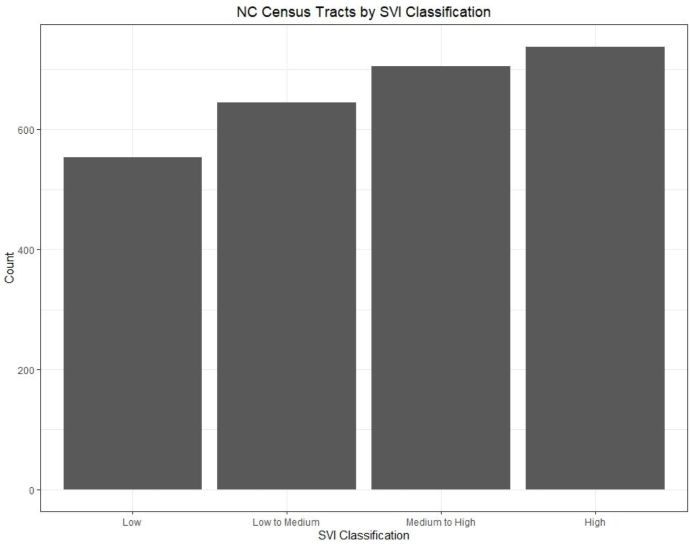
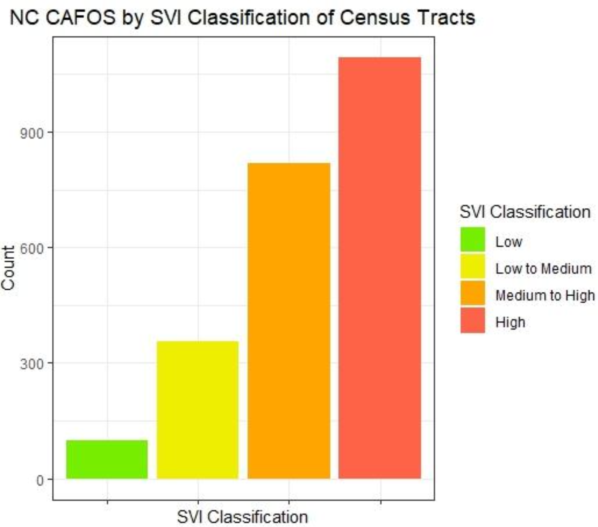
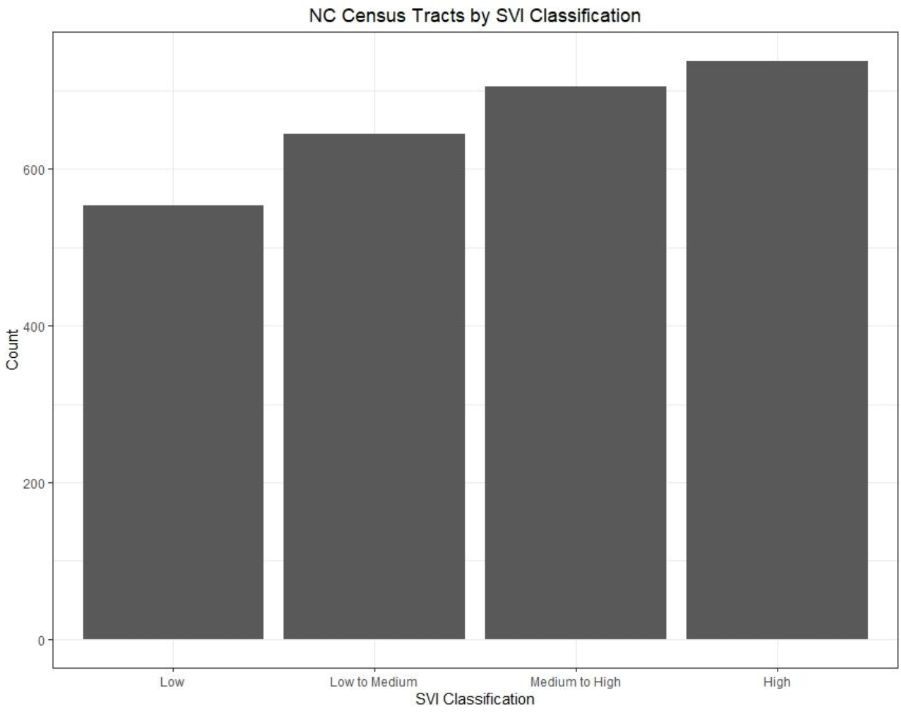
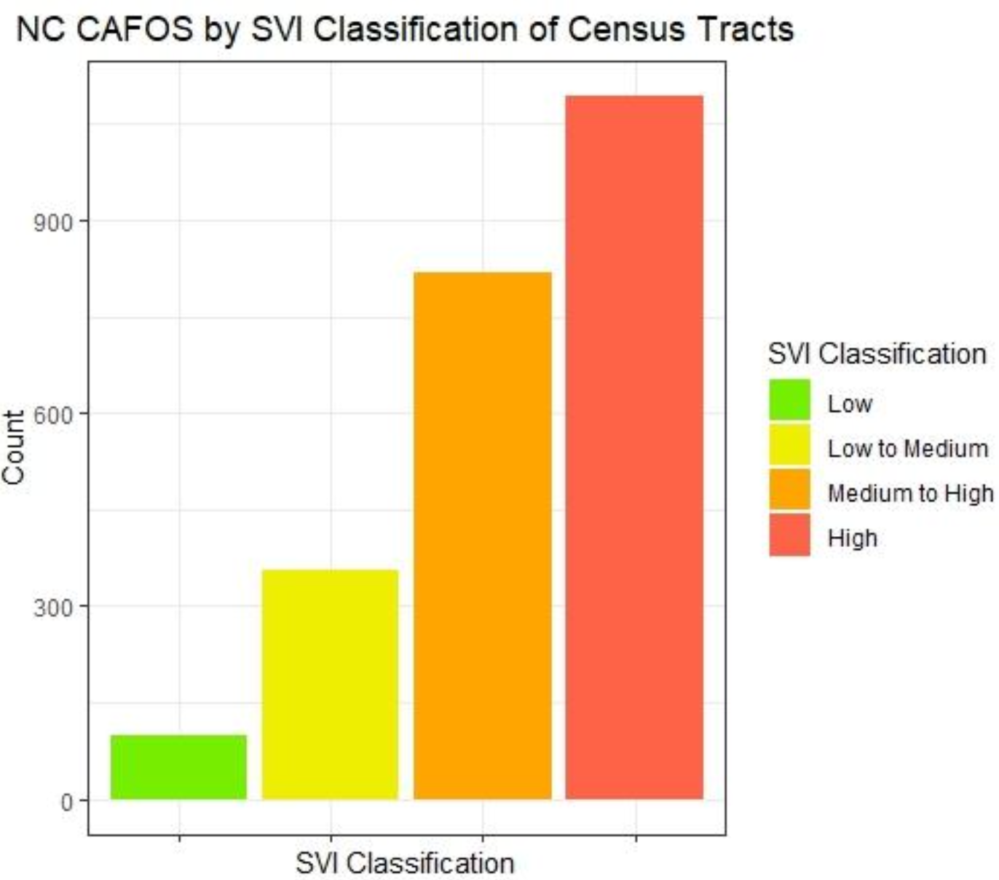
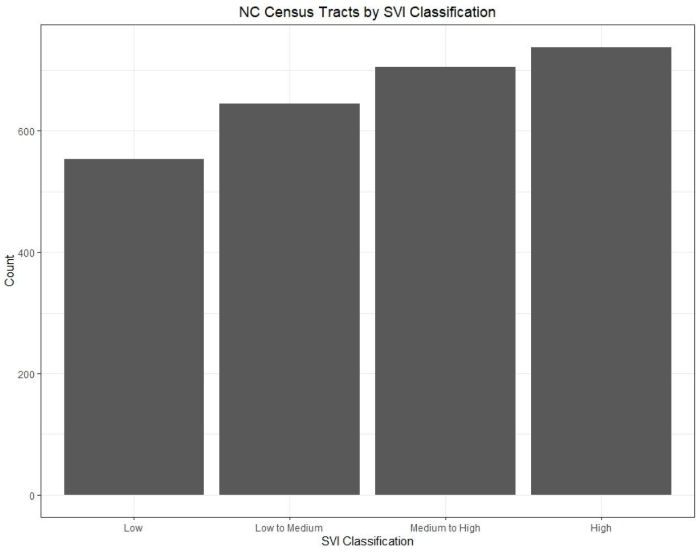
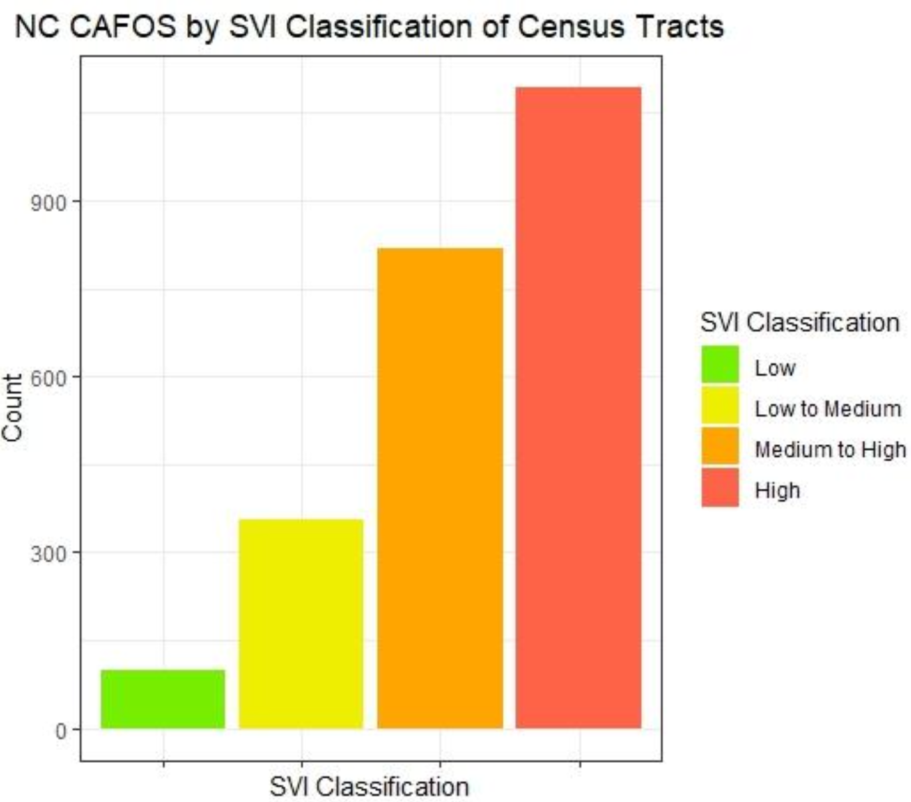

Presence of CAFOs in Socially Vulnerable Areas of North Carolina
UNC-Chapel Hill 2023


Created as part of a geospatial analysis course at UNC-Chapel Hill, these maps and graphs come from a project analyzing whether feedlots (CAFOs) in North Carolina are more concentrated in socially vulnerable areas. The CAFO data from the NC DEQ while the social vulnerability data came from the CDC's social vulnerability index. The maps were completed in ArcGIS Pro while the graphs as well as the data cleaning were done with R.
 


